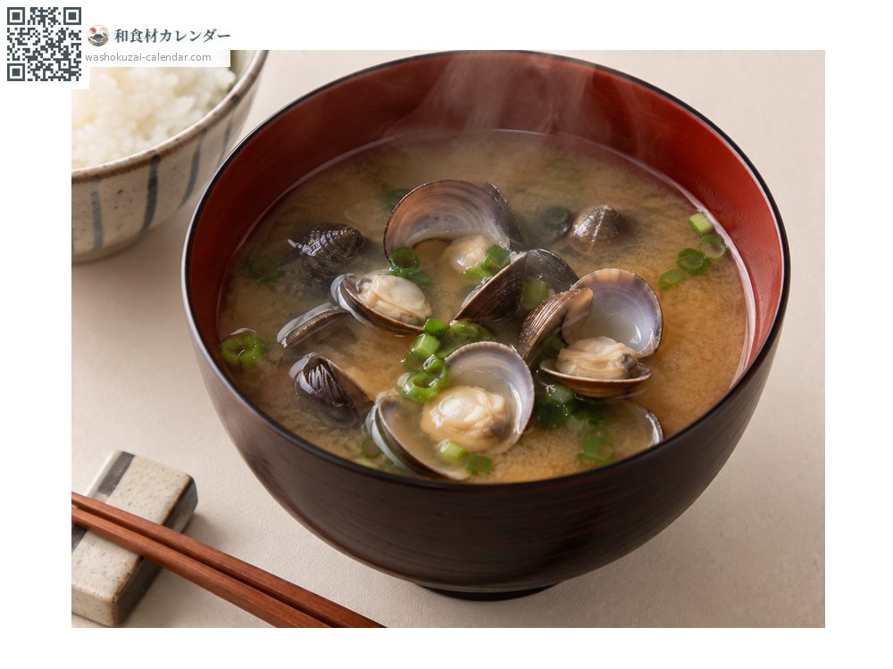
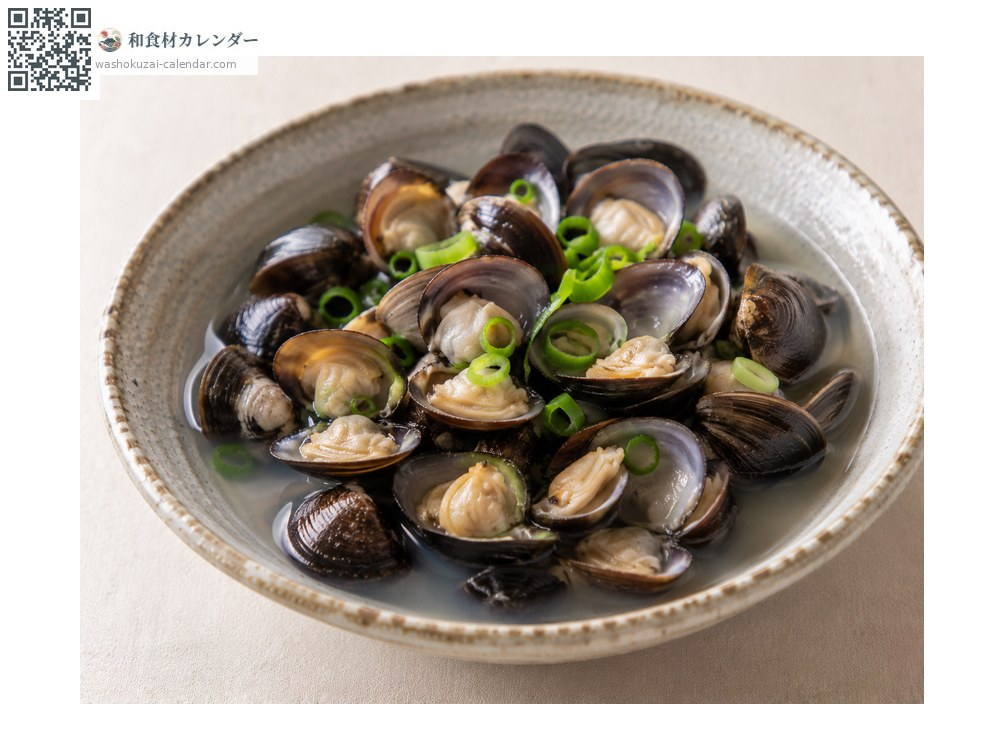
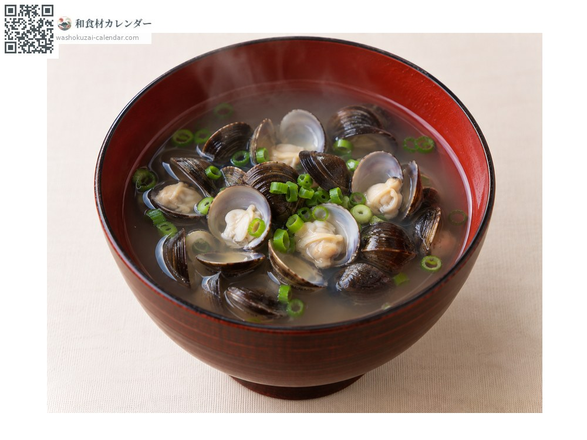
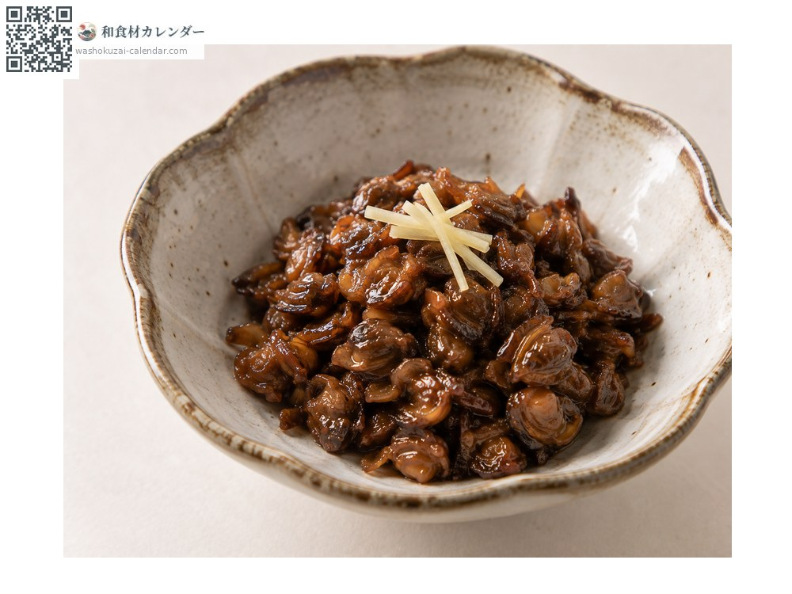

魚介
シジミ
しじみ
別名・別表記蜆、shijimi
旬は1月・2月・8月・9月

旬の時期
1月
2月
3月
4月
5月
6月
7月
8月
9月
10月
11月
12月
旬出回り
調理法

味噌汁
定番。出汁が濃く出る。

酒蒸し
酒でさっと蒸す。

しじみ汁
すまし仕立てでも。

佃煮
身を甘辛く煮る。
選び方
殻に厚みがあり、つやのある黒褐色のもの。口が閉じているもの。
保存方法
薄い塩水(1%程度)で砂抜きする。冷凍すると旨み成分が増えるとされる。
主な産地
豆知識
島根・宍道湖が最大の産地。夏の「土用しじみ」と冬の「寒しじみ」がそれぞれ旬とされる。